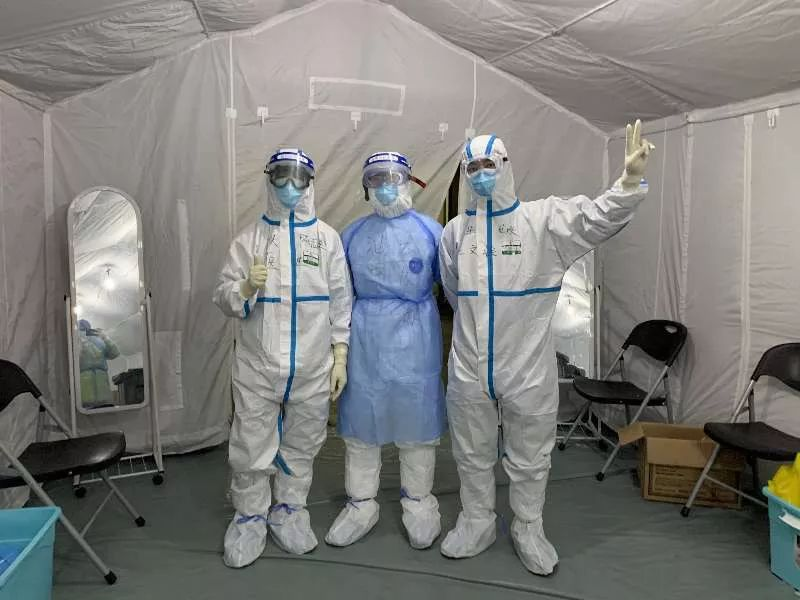
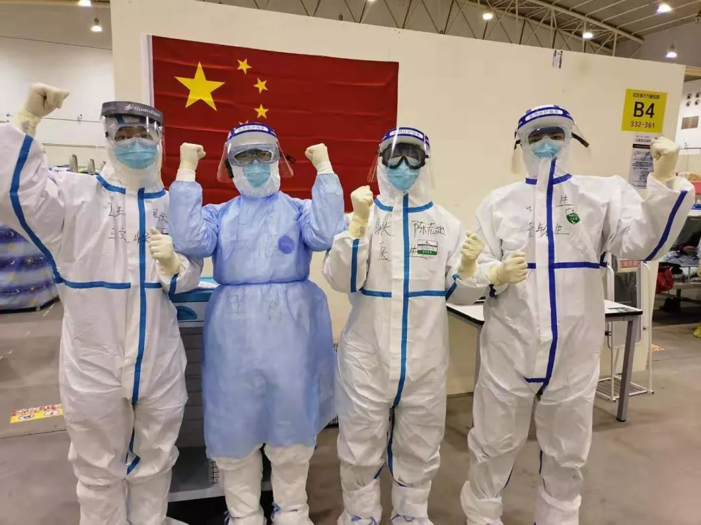
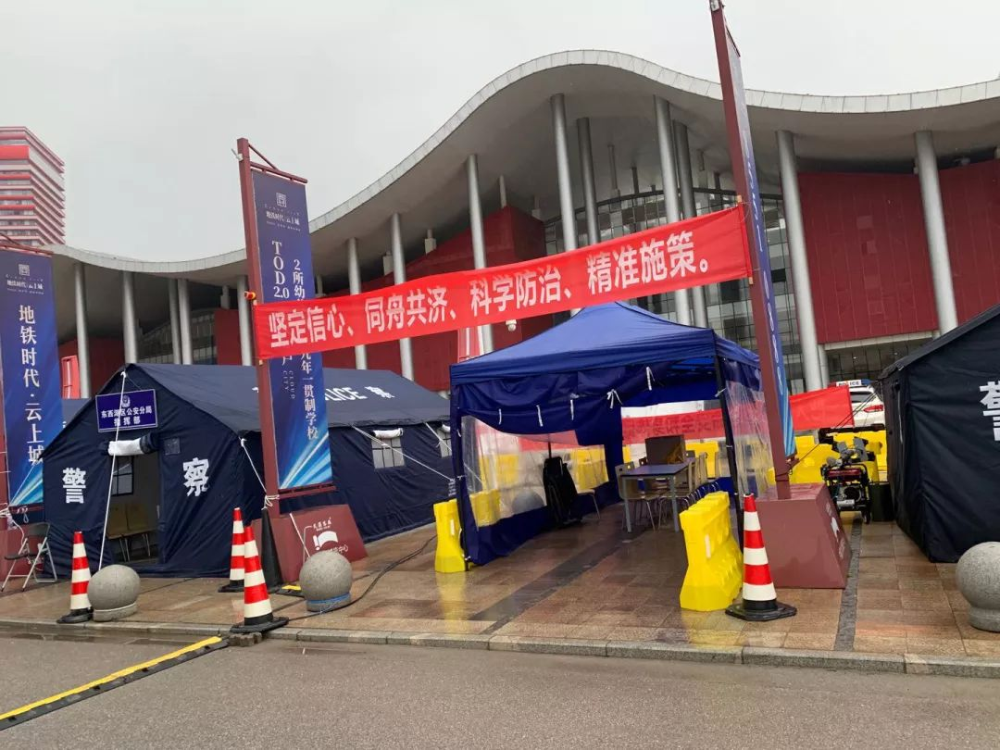

支援医院的武汉环卫工：每天工作16小时，处理300桶垃圾
原文链接 备份链接 ********** *****疫情暴发后的武汉，不止一家医院出现保洁人员紧缺的情况。在人手告急的情况下，江汉、江岸、汉南等多个区的城管部门采取行动，号召员工支援保洁工作。一批又一批环卫工人告别街头，开始忙碌在武汉市的 …
五、第一次入舱
13号的凌晨两点是第一次入舱，12号整个白天该吃吃该喝喝，心情倒没什么紧张，但就是一直睡不着，半片半片的量吃了总共两片舒乐安定都没效果，索性起来活动了。到了晚上八点，在床上翻来复去一个多小时终于沉沉睡去。十一点四十闹钟起床，怕喝水后要撒尿，吃了几块干粮半个苹果和一杯藕粉，然后洗澡穿上纸尿裤手术衣，不到十二点半，队友便在酒店前台打电话催我们出发；酒店门口另一城市的兄弟说尽量再早些，让一线的同袍们早点下班。
一路上，负责接送的司机非常客气，一直说些感谢的话。一路，灯火阑珊依旧，但只有几辆接送医护人员的通勤车在撒欢跑。大概二十分钟的时间到达了方舱医院。

 今晚共同奋斗三位兄弟
今晚共同奋斗三位兄弟
放入眼帘的便是一水的帐篷，在夜色与灯火的交汇下显示着难言的沉重。下车之后，按照工作人员的指引，走入工作区更衣穿防护服，工作人员非常的细心，用胶布把防护服的领口、与口罩的接触边缘都贴住了，之后问了我们的籍贯姓名职业，用黑色签字笔写在衣服上。临进舱时，工作人员说要不给你们拍个照，等出来了再传给你。
一位兄弟还没穿好，所以只有三人。老王就在中间，由于防护物资是各地调配捐赠的，参差不齐，我拿了套防护级别稍微低点的，所以外面再套了一层隔离衣。
第一次入舱程序不熟，距离规定交班时间凌晨两点完了十四分钟，我们和交接班的医生一见面便不停道歉，也下决心以后再早点出发，千万不能误了人家休息。
夜已深，大部分病人已沉沉入睡，我们四人分成两组，挨个走完差不多四百张病床，关注一下交班的几个重点病号，一个小时便过去了。方舱里面住的都是轻症的病人，查完房后处理的都是些琐事，有病人决得睡不着了，觉得血压高了，觉得自己的病情加重了之类的，每每这些都是给病人先测量生命体征，告诉他（她）一切安好，不必太紧张。嗯，总的来说，安慰胜于开药；有些实在焦虑的，就给人把把脉，指着我胸口的字说：您看，我是中医的，您的脉象四平八稳，杠杠的没事。总的来说，安慰为主，开药为辅。
做完这些，四位队友凑到一块，研究医院这套电子系统这么用，虽说已经有过视频培训，但实操起来还是有很多不懂。我们研究了半个多小时，总算基本上手。就在那时，突然发现一位队友下巴的皮肤若隐若现，赶紧呼叫护士帮忙，用一个新口罩当成防护面料遮在暴露的皮肤上，然后圈了几圈胶带。
忙完这些，我才发觉自己出了一身汗，问护士我自己遮的严实不。得到肯定的回答后，我神叨叨地跑到镜子前仔细看看，顺便去看看那个说血压高的病人情况怎样了。已是凌晨三点多，那位病人已经沉沉睡去，和大部分的病人一样。准备回医护办公室路上，几个护士聚到一块和我打招呼：长夜漫漫，过来坐坐吧。聊天吗，我在行！
当晚的护士来自新疆，安徽两地，都是2月5号匆匆接到命令出发，她们大部分都已成家，有的孩子还不会走路。聊完沉重的事，隔着厚厚的面罩口罩防护服也没法谈风花雪月，只能谈谈家乡的美食，我没想潮汕的美食都传的众人皆知了。一位安徽的小姐姐眼罩已经布满水珠，听着卤水鹅肉、清蒸大虾、蒜蓉扇贝、牛肉丸、牛肉火锅，布满雾气里眼神bulingbuling的。
我说，等国运安康了，只要你们过来，请各位吃遍各种美食。大伙听了挺兴奋，转头一想哪有时间出去玩啊，医务人员的年假谁休过啊。
小姐姐说，咱们估计要合作一两个月的，拍张照留念吧。我说，队伍规定不许带手机，哪有工具拍照啊。小姐姐说你这就图样图森破了，咱们每个舱有个工作手机，用来拍照通信，你用这个手机的微信添加自己为好友，照片就可以巴拉巴拉的传出去了。我一听这操作果然骚，于是有了这几张图

夜已深，我们跟拍静默电影一样摆了几个姿势。
拍完照后，各自分散巡查病人。凌晨五点多，感到一阵心悸冷汗，估计是低血糖，忍了忍过去了，但我更庆幸纸尿裤到现在还没派上用场。
六点钟，方舱顶部滴答响起，貌似下起雨来，我也一阵阵发困，内心盼着八点赶快到来。舱里的病人逐渐起床了，每天吃了睡睡了吃的日子，让他们养成早睡早起的习惯。洗簌完的病人陆续跑过来，大部分是药吃完了想继续开的，顺便给老伴开，给孩子开，给父母开——很多都是整个家庭一起住进来的。
忙完这个，已经八点了，和接班的兄弟匆匆交接后带着一点负担就准备离开了，因为还有脱防护衣这个关口。出口处排着八人的队伍，衣服上有写保安的、警察的、志愿者的，为减少交叉感染的风险，每次只能出去2人，按照脱防护服10分钟的保守时间估算，我要四十分钟后才能开始脱防护服。于是和排队的人聊了起来，很多人都是自愿进来的，这令我非常佩服——方舱虽说都是轻症病人，但抵不住病好多，空气里病毒的密度相应也高，感染的危险系数自然也增高。我是干这行的，没法拒绝，但他们其实可以选择不来。
站累了，我在出口门前找了排凳子坐下，旁边一位茂名的护士跟我说朋友借个肩膀靠靠，我说随便靠呗。之后知道她刚来上班，估计颈椎病发作，头痛欲裂；临进出口里，我和另一位队友劝她，和护理组长请假回吧，你这个状态很容易生病的。护士说谢谢了，她还想坚持下去。
之后进了污染区，在逼仄的空间里等待每一个步骤指引，有种缺氧晕倒的感觉，在工作人员的指引下机械式的完成了脱防护服。走出方舱的时候，恍若隔世。

原文链接 备份链接 ********** *****疫情暴发后的武汉，不止一家医院出现保洁人员紧缺的情况。在人手告急的情况下，江汉、江岸、汉南等多个区的城管部门采取行动，号召员工支援保洁工作。一批又一批环卫工人告别街头，开始忙碌在武汉市的 …
原文链接 备份链接 除夕夜，我跟儿子开了视频电话。他才7岁，不太懂现在外面发生了什么，为什么自己不能出去玩。他喜欢玩游戏，我就告诉他，外面有很多病毒，病毒就是一种怪兽，妈妈在外面打怪兽。然后他说，“妈妈，我要去你那里，跟你一起去打怪兽！” …
原文链接 备份链接 走进武汉金银潭医院，第一感觉是安静。与在武汉闹市区其他综合类的三甲医院不同，这家传染病专科医院，楼与楼之间隔得很远，种了好多树，即使在冬季也是郁郁葱葱。收治了几百位新型冠状病毒肺炎患者的住院楼，门窗紧闭，站在楼下几乎听 …
原文链接 备份链接 封面报道之治理篇： 鄂州：考验疫区网格员 | 咸宁：接送病人在路上 | 襄阳：最后的出口 | 潜江：汪洋中的一条船 2月11日晚上11点半，湖北省孝感市孝南区某乡镇卫生院副院长赵明（化名），才从隔离病房里出来，消毒、回 …
原文链接 备份链接 澎湃新闻记者 赵思维 发自武汉 实习生 沈佳昕 最近的20多天，何伟（化名）的心情犹如过山车般起落。 从确诊住不进医院的焦虑，到住进方舱医院治愈后的激动，“做一个健康人”，和家人平平安安过日子，成为他这段时间以来想得 …